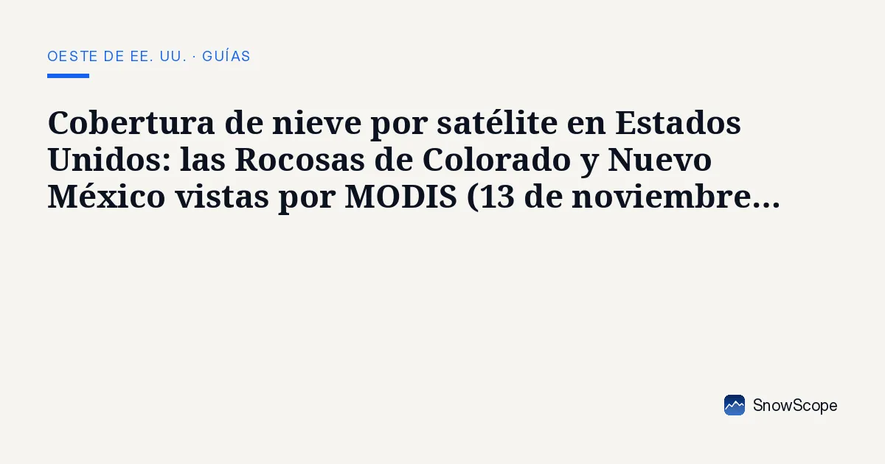
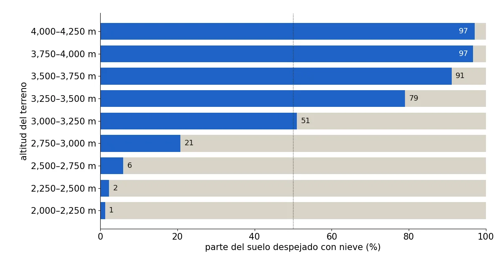
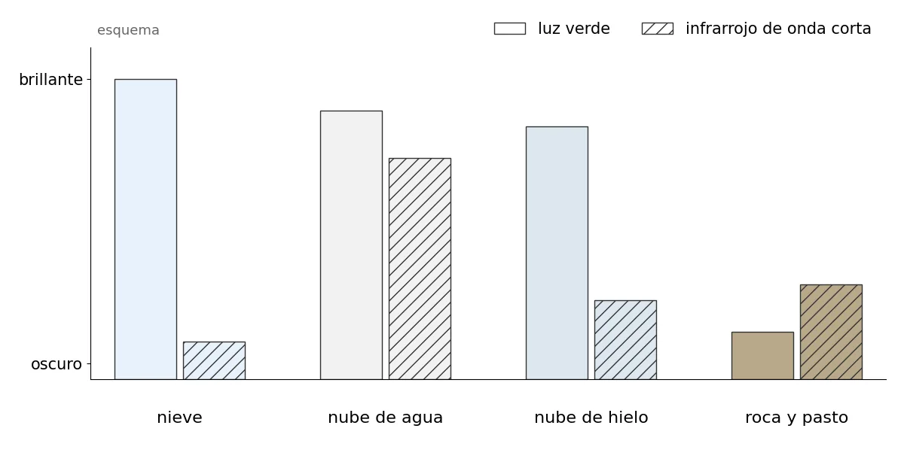

Cobertura de nieve por satélite en Estados Unidos: las Rocosas de Colorado y Nuevo México vistas por MODIS (13 de noviembre de 2026)
¿Hay nieve ya en las Rocosas del sur? Lo revisamos con los mapas diarios de nieve de los satélites MODIS de la NASA, píxel por píxel, para Colorado, el norte de Nuevo México y los bordes de Utah y Arizona. Con la vista despejada más reciente de cada píxel hasta el 13 de noviembre de 2026, MODIS vio nieve en 33,184 km² (12,812 millas cuadradas) de terreno por encima de 2,000 m (6,600 pies). Es el 17 % del terreno que el satélite pudo ver. Casi toda está en las cumbres.
Consulta la previsión de nieve en tiempo real de Montañas Rocosas del sur (Colorado y Nuevo México) en la app SnowScopeEspesor de nieve, alertas de nieve polvo y mapa 3D, gratis.

Una semana con cielos limpios
MODIS va a bordo de dos satélites de la NASA: Terra pasa por la mañana y Aqua a primera hora de la tarde. Cada uno toma una imagen diaria con píxeles de unos 500 m. En las Rocosas del sur el cielo estuvo limpio varios días seguidos: con las dos pasadas juntas, las nubes cubrieron solo el 4 % del terreno alto el 8 de noviembre, el 1 % el 9 de noviembre y el 3 % el 11 de noviembre. Pocas veces se ve una cordillera entera de una sola vez.
Para el mapa usamos la vista despejada más reciente de cada píxel. El 61 % del terreno alto se vio por última vez el 12 de noviembre y el 34 % el 13 de noviembre. Ningún píxel quedó bajo las nubes en todas las pasadas. Como precaución, un píxel despejado a menos de 3 píxeles (unos 1.5 km) de una nube en la misma pasada se cuenta como nube: los bordes de las nubes son donde más se confunden con nieve.
La zona estudiada va de 35 a 41° N y de 109.2 a 104.5° O, y solo contamos el terreno a 2,000 m o más, según el modelo de elevación Copernicus GLO-90: 192,130 km² en total.
La nieve que se fue y la que volvió
Los días despejados permiten seguir la nieve día a día. El 5 de noviembre, el 33 % del terreno despejado estaba blanco. Con varios días despejados, esa nieve temprana se fue reduciendo: 13 % el 9 de noviembre y 9 % el 11 de noviembre. El 12 de noviembre la proporción subió al 19 %, lo más probable por una nevada nueva en las montañas altas. El satélite dice dónde hay nieve, pero no cuánta cayó ni qué espesor tiene.
La altura lo decide casi todo. Entre 2,000 y 2,500 m casi no había nieve: del 1 al 2 % del terreno despejado. Entre 2,750 y 3,000 m era el 21 %, entre 3,000 y 3,250 m el 51 % y entre 3,500 y 3,750 m el 91 %. Por encima de 4,000 m (13,100 pies), el 97 % del terreno despejado estaba blanco. La línea de nieve de la zona, la altura más baja a partir de la cual más de la mitad del terreno despejado está nevado, queda hacia los 3,100 m (10,200 pies).
Hay diferencias grandes entre sierras. En los San Juan, en el suroeste de Colorado, el 54 % del terreno despejado estaba blanco, con 9,307 km² de nieve y la línea hacia los 3,000 m (9,800 pies). En la parte norte del Front Range, cerca de Denver, era el 29 %, con la línea hacia los 3,200 m (10,500 pies). En la Sangre de Cristo de Nuevo México, solo el 5 % y la línea muy alta, hacia los 3,500 m (11,500 pies): por ahora, apenas las cumbres.

Lo que dicen las estaciones y las noticias locales
La red SNOTEL del Servicio de Conservación de Recursos Naturales (NRCS) mide el espesor de nieve con estaciones automáticas en las montañas del oeste. El 12 de noviembre, en nuestra zona de Colorado (37 a 41° N), 49 de las 63 estaciones situadas por encima de la línea de nieve del satélite, 3,100 m (10,200 pies), tenían nieve. Por debajo, solo 18 de 54. Más al sur, entre el sur de Colorado y Nuevo México, 19 de 25 estaciones por encima de 3,200 m (10,500 pies) tenían nieve y 12 de 24 por debajo. Las estaciones confirman la idea general: nieve arriba, poca o ninguna abajo, aunque en el sur la nieve fina baja algo más de lo que muestra el satélite.
Las noticias locales describen el mismo arranque flojo. CBS Colorado informó el 6 de noviembre que Breckenridge retrasó su apertura porque quería una base de nieve más gruesa, mientras que Copper Mountain recibió unas cuatro pulgadas de nieve durante la noche. En Nuevo México, KOB esperaba el 4 de noviembre hasta una pulgada de nieve en las montañas del extremo norte, con poca o ninguna acumulación en las zonas más bajas.

Cómo distingue el satélite la nieve de una nube
La nieve refleja mucha luz verde, pero en el infrarrojo de onda corta, cerca de 1.6 µm, se ve oscura, porque el hielo absorbe esa luz. La mayoría de las nubes de gotas de agua se ven brillantes en las dos. Las rocas, la tierra y las plantas reflejan poco en el verde. El Índice de Nieve de Diferencia Normalizada (NDSI, por sus siglas en inglés) aprovecha ese contraste: NDSI = (verde − infrarrojo) / (verde + infrarrojo), con las bandas 4 y 6 de MODIS. Si el valor es alto y positivo, es nieve.
El algoritmo de la NASA, la Colección 6.1, busca nieve donde el NDSI es mayor que cero y después descarta los casos dudosos. Por ejemplo, rechaza los valores por debajo de 0.1 y toma las nubes de una máscara de nubes aparte. Cada píxel recibe un valor de 'cobertura de nieve NDSI' de 0 a 100. Ese valor no es el porcentaje del píxel cubierto de nieve: según la guía de usuario, la Colección 6.1 ya no calcula la fracción de nieve. Aquí cualquier valor de 1 a 100 cuenta como nieve.
Hay límites. Debajo de un bosque espeso de pinos, el satélite ve las copas verdes y no la nieve. Las nubes finas de hielo, como los cirros, pueden parecer nieve, porque el hielo absorbe el infrarrojo también en el aire. Y en el satélite Aqua, cerca del 75 % de los detectores de la banda 6 no funcionan: la NASA reconstruye esa banda con un método de restauración de imagen, y desde la Colección 6 los dos satélites usan el mismo algoritmo.
¿Coincide con el mapa de SnowScope?
Para todo el oeste de Estados Unidos comparamos MODIS del 12 de noviembre con el mapa de nieve de SnowScope del mismo día. En 1,021,095 km² de terreno alto que el satélite vio despejado, los dos coinciden en el 95.5 % de la superficie. MODIS ve nieve donde nuestro mapa no tiene en el 3.0 % y al revés en el 1.5 %.
No es una prueba independiente: nuestro mapa ya quita la nieve donde una vista reciente y despejada de MODIS muestra el suelo sin nieve. Sirve para ver que los dos cuentan la misma historia, no para medir la precisión de cada uno.
Consejos para esquiadores
- Para esquiar o caminar con nieve en noviembre, busca terreno por encima de unos 10,200 pies en Colorado; en Nuevo México, por ahora, solo las cumbres.
- Mira la fecha de la última vista despejada antes de fiarte de un mapa de nieve por satélite, sobre todo después de una tormenta.
- En el bosque puede haber más nieve de la que muestra el satélite: los árboles tapan el suelo.
Más mapas (sitios externos)
Referencias y créditos
- Riggs, G.A., Hall, D.K. and Román, M.O. (2019). MODIS Snow Products Collection 6.1 User Guide, version 1.0. NASA / NSIDC nsidc.org/sites/default/files/c61_modis_snow_user_guide.pdf
- Hall, D.K., Riggs, G.A., Salomonson, V.V., DiGirolamo, N.E. and Bayr, K.J. (2002). MODIS snow-cover products. Remote Sensing of Environment 83, 181-194 doi.org/10.1016/S0034-4257(02)00095-0
- Hall, D.K. and Riggs, G.A. (2011). Normalized-Difference Snow Index (NDSI). Encyclopedia of Snow, Ice and Glaciers, Springer doi.org/10.1007/978-90-481-2642-2_376
- NSIDC: MODIS/Terra Snow Cover Daily L3 Global 500m Grid, Version 61 (MOD10A1) nsidc.org/data/mod10a1/versions/61
- NASA EOSDIS Global Imagery Browse Services (GIBS): layers MODIS_Terra_NDSI_Snow_Cover and MODIS_Aqua_NDSI_Snow_Cover (from MOD10_L2 / MYD10_L2, Collection 6.1) and their colour map www.earthdata.nasa.gov/engage/open-data-services-software/earthdata-developer-portal/gibs-api
- Copernicus DEM GLO-90 (European Space Agency, Copernicus programme) doi.org/10.5270/ESA-c5d3d65
- USDA NRCS SNOTEL, espesor de nieve diario (Air and Water Database) www.nrcs.usda.gov/resources/data-and-reports/snow-and-water-interactive-map
- CBS Colorado (6 de noviembre de 2026): Breckenridge delays opening in Colorado mountains due to too warm overnight temps www.cbsnews.com/colorado/news/breckenridge-delays-opening-colorado-mountains-too-warm-overnight-temps/
- KOB 4 (4 de noviembre de 2026): Cold front brings strong winds, winter weather to parts of New Mexico www.kob.com/new-mexico/cold-front-brings-strong-winds-winter-weather-to-parts-of-new-mexico/
Sobre estas cifras
Datos: capas diarias de NASA GIBS MODIS_Terra_NDSI_Snow_Cover y MODIS_Aqua_NDSI_Snow_Cover (hechas con MOD10_L2 / MYD10_L2, Colección 6.1, casi en tiempo real), mosaico de 500 m, decodificadas con la tabla de colores publicada de la capa para recuperar los valores del producto. Nieve = 1 a 100, sin nieve = 0. Cada día: Terra si está despejado, si no Aqua; los píxeles despejados a menos de 3 píxeles de una nube en la misma pasada cuentan como nube. Composición: vista despejada más reciente de cada píxel, del 4 al 13 de noviembre de 2026. Superficies con el tamaño real del píxel en cada latitud. Zona 35-41° N, 109.2-104.5° O, terreno a 2,000 m o más (Copernicus GLO-90). Sierras: San Juan 37.2-38.3° N 108.2-106.6° O; Front Range norte 39.3-40.8° N 106.2-105.4° O; Sangre de Cristo (Nuevo México) 35.5-37° N 106-105.2° O. Línea de nieve: banda de 100 m más baja por encima de la cual todas las bandas con suficiente terreno despejado están más de la mitad nevadas. Comparación con SnowScope: mapa de 500 m del 12 de noviembre, 1 cm o más = nieve.
Citar este informe
Para investigación, docencia o prensa: cifras y gráficos reutilizables libremente bajo CC BY 4.0 con esta cita.
SnowScope (2026), Cobertura de nieve por satélite en Estados Unidos: las Rocosas de Colorado y Nuevo México vistas por MODIS (13 de noviembre de 2026), https://snowscope.app/blog/es/2026/11/cobertura-de-nieve-satelite-estados-unidos-rocosas-colorado-nuevo-mexico-noviembre-2026.html, consultado el 2026-11-13
SnowScope (Atlas Labs). (2026, November 13). Cobertura de nieve por satélite en Estados Unidos: las Rocosas de Colorado y Nuevo México vistas por MODIS (13 de noviembre de 2026). SnowScope snow reports. https://snowscope.app/blog/es/2026/11/cobertura-de-nieve-satelite-estados-unidos-rocosas-colorado-nuevo-mexico-noviembre-2026.html
BibTeX
@misc{snowscope2026coberturadenievesatelite,
author = {{SnowScope (Atlas Labs)}},
title = {Cobertura de nieve por satélite en Estados Unidos: las Rocosas de Colorado y Nuevo México vistas por MODIS (13 de noviembre de 2026)},
year = {2026},
month = nov,
howpublished = {\url{https://snowscope.app/blog/es/2026/11/cobertura-de-nieve-satelite-estados-unidos-rocosas-colorado-nuevo-mexico-noviembre-2026.html}},
note = {Published 2026-11-14 13:29 UTC; accessed 2026-11-13}
}· CC BY 4.0 · Métodos, datos y herramientas →
Sigue Montañas Rocosas del sur (Colorado y Nuevo México)
Gratis: un aviso cuando llega la nieve y la previsión cada mañana.